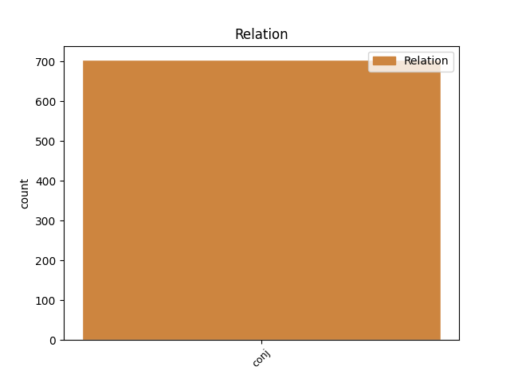
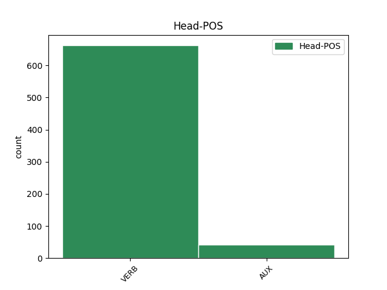
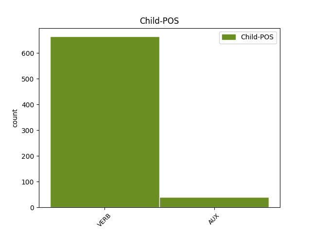

Distribution of features within this leaf



Agreement Rules sorted by frequency.
- When the dependent token is the conjunct(conj) of the head token,
1 Protokole _ _ _ _ 0 _ _ _
2 turi _ _ _ _ 0 _ _ _
3 būti _ _ _ _ 0 _ _ _
4 nurodyta _ _ _ _ 0 _ _ _
5 data _ _ _ _ 0 _ _ _
6 , _ _ _ _ 0 _ _ _
7 protokolo _ _ _ _ 0 _ _ _
8 registravimo _ _ _ _ 0 _ _ _
9 numeris _ _ _ _ 0 _ _ _
10 , _ _ _ _ 0 _ _ _
11 Komiteto _ _ _ _ 0 _ _ _
12 posėdžio _ _ _ _ 0 _ _ _
13 dalyviai _ _ _ _ 0 _ _ _
14 , _ _ _ _ 0 _ _ _
15 svarstyti _ _ _ _ 0 _ _ _
16 klausimai _ _ _ _ 0 _ _ _
17 , _ _ _ _ 0 _ _ _
18 kalbėję kalbėti VERB vksm.dlv.veik.būt-k.vyr.dgs.V. Aspect=Perf|Case=Nom|Definite=Ind|Gender=Masc|Number=Plur|Polarity=Pos|Tense=Past|VerbForm=Part|Voice=Act 0 _ _ _
19 bei _ _ _ _ 0 _ _ _
20 klausimus _ _ _ _ 0 _ _ _
21 pateikę pateikti VERB vksm.dlv.veik.būt-k.vyr.dgs.V. Aspect=Perf|Case=Nom|Definite=Ind|Gender=Masc|Number=Plur|Polarity=Pos|Tense=Past|VerbForm=Part|Voice=Act 18 conj _ _
22 asmenys _ _ _ _ 0 _ _ _
23 , _ _ _ _ 0 _ _ _
24 balsavimo _ _ _ _ 0 _ _ _
25 rezultatai _ _ _ _ 0 _ _ _
26 ir _ _ _ _ 0 _ _ _
27 priimti _ _ _ _ 0 _ _ _
28 sprendimai _ _ _ _ 0 _ _ _
29 . _ _ _ _ 0 _ _ _
Disagree Examples:
1 Ar _ _ _ _ 0 _ _ _
2 tai _ _ _ _ 0 _ _ _
3 yra _ _ _ _ 0 _ _ _
4 humaniška _ _ _ _ 0 _ _ _
5 , _ _ _ _ 0 _ _ _
6 gerai _ _ _ _ 0 _ _ _
7 - _ _ _ _ 0 _ _ _
8 yra būti VERB vksm.asm.tiesiog.es.vns.3. Mood=Ind|Number=Sing|Person=3|Polarity=Pos|Tense=Pres|VerbForm=Fin 0 _ _ _
9 kitas _ _ _ _ 0 _ _ _
10 klausimas _ _ _ _ 0 _ _ _
11 “ _ _ _ _ 0 _ _ _
12 , _ _ _ _ 0 _ _ _
13 - _ _ _ _ 0 _ _ _
14 ŠMKK _ _ _ _ 0 _ _ _
15 kalbėjo kalbėti VERB vksm.asm.tiesiog.būt-k.vns.3. Aspect=Perf|Mood=Ind|Number=Sing|Person=3|Polarity=Pos|Tense=Past|VerbForm=Fin 8 conj _ _
16 G _ _ _ _ 0 _ _ _
17 . _ _ _ _ 0 _ _ _
18 Viliūnas _ _ _ _ 0 _ _ _
19 . _ _ _ _ 0 _ _ _
1 Anot _ _ _ _ 0 _ _ _
2 parlamentarės _ _ _ _ 0 _ _ _
3 Dalios _ _ _ _ 0 _ _ _
4 Teišerskytės _ _ _ _ 0 _ _ _
5 , _ _ _ _ 0 _ _ _
6 viešumas _ _ _ _ 0 _ _ _
7 skaidrumą _ _ _ _ 0 _ _ _
8 užtikrins užtikrinti VERB vksm.asm.tiesiog.būs.vns.3. Mood=Ind|Number=Sing|Person=3|Polarity=Pos|Tense=Fut|VerbForm=Fin 0 _ _ _
9 , _ _ _ _ 0 _ _ _
10 bet _ _ _ _ 0 _ _ _
11 to _ _ _ _ 0 _ _ _
12 nepakanka nepakakti VERB vksm.asm.neig.tiesiog.es.3. Mood=Ind|Person=3|Polarity=Neg|Tense=Pres|VerbForm=Fin 8 conj _ SpaceAfter=No
13 . _ _ _ _ 0 _ _ _
1 Manau manyti VERB vksm.asm.tiesiog.es.vns.1. Mood=Ind|Number=Sing|Person=1|Polarity=Pos|Tense=Pres|VerbForm=Fin 0 _ _ _
2 , _ _ _ _ 0 _ _ _
3 kad _ _ _ _ 0 _ _ _
4 naujasis _ _ _ _ 0 _ _ _
5 įstatymas _ _ _ _ 0 _ _ _
6 , _ _ _ _ 0 _ _ _
7 kuris _ _ _ _ 0 _ _ _
8 pakeis _ _ _ _ 0 _ _ _
9 tarybų _ _ _ _ 0 _ _ _
10 sudėtį _ _ _ _ 0 _ _ _
11 , _ _ _ _ 0 _ _ _
12 o _ _ _ _ 0 _ _ _
13 atlyginimus _ _ _ _ 0 _ _ _
14 nustatys _ _ _ _ 0 _ _ _
15 būtent _ _ _ _ 0 _ _ _
16 tarybos _ _ _ _ 0 _ _ _
17 , _ _ _ _ 0 _ _ _
18 išspręs _ _ _ _ 0 _ _ _
19 šitą _ _ _ _ 0 _ _ _
20 klausimą _ _ _ _ 0 _ _ _
21 “ _ _ _ _ 0 _ _ _
22 , _ _ _ _ 0 _ _ _
23 - _ _ _ _ 0 _ _ _
24 žurnalistams _ _ _ _ 0 _ _ _
25 sakė sakyti VERB vksm.asm.tiesiog.būt-k.vns.3. Aspect=Perf|Mood=Ind|Number=Sing|Person=3|Polarity=Pos|Tense=Past|VerbForm=Fin 1 conj _ _
26 D _ _ _ _ 0 _ _ _
27 . _ _ _ _ 0 _ _ _
28 Teišerskytė _ _ _ _ 0 _ _ _
29 . _ _ _ _ 0 _ _ _
1 Domėjimosi _ _ _ _ 0 _ _ _
2 LKP _ _ _ _ 0 _ _ _
3 vidinėmis _ _ _ _ 0 _ _ _
4 reformomis _ _ _ _ 0 _ _ _
5 tikrai _ _ _ _ 0 _ _ _
6 nepagailėta nepagailėti VERB vksm.dlv.neig.neveik.būt.bev. Definite=Ind|Gender=Neut|Polarity=Neg|Tense=Past|VerbForm=Part|Voice=Pass 0 _ _ _
7 - _ _ _ _ 0 _ _ _
8 apie _ _ _ _ 0 _ _ _
9 1 _ _ _ _ 0 _ _ _
10 / _ _ _ _ 0 _ _ _
11 3 _ _ _ _ 0 _ _ _
12 istorijos _ _ _ _ 0 _ _ _
13 teksto _ _ _ _ 0 _ _ _
14 skiriama skirti VERB vksm.dlv.neveik.es.bev. Definite=Ind|Gender=Neut|Polarity=Pos|Tense=Pres|VerbForm=Part|Voice=Pass 6 conj _ _
15 komunistų _ _ _ _ 0 _ _ _
16 veiklai _ _ _ _ 0 _ _ _
17 ir _ _ _ _ 0 _ _ _
18 jų _ _ _ _ 0 _ _ _
19 santykiams _ _ _ _ 0 _ _ _
20 su _ _ _ _ 0 _ _ _
21 Maskva _ _ _ _ 0 _ _ _
22 . _ _ _ _ 0 _ _ _
1 Gali galėti VERB vksm.asm.tiesiog.es.dgs.3. Mood=Ind|Number=Plur|Person=3|Polarity=Pos|Tense=Pres|VerbForm=Fin 0 _ _ _
2 būti _ _ _ _ 0 _ _ _
3 , _ _ _ _ 0 _ _ _
4 kad _ _ _ _ 0 _ _ _
5 tokie _ _ _ _ 0 _ _ _
6 „ _ _ _ _ 0 _ _ _
7 pasažai _ _ _ _ 0 _ _ _
8 “ _ _ _ _ 0 _ _ _
9 yra _ _ _ _ 0 _ _ _
10 skubėjimo _ _ _ _ 0 _ _ _
11 pasekmė _ _ _ _ 0 _ _ _
12 - _ _ _ _ 0 _ _ _
13 istorija _ _ _ _ 0 _ _ _
14 parengta parengti VERB vksm.dlv.neveik.būt.mot.vns.V. Case=Nom|Definite=Ind|Gender=Fem|Number=Sing|Polarity=Pos|Tense=Past|VerbForm=Part|Voice=Pass 1 conj _ _
15 LPS _ _ _ _ 0 _ _ _
16 įkūrimo _ _ _ _ 0 _ _ _
17 dvidešimtmečio _ _ _ _ 0 _ _ _
18 progai _ _ _ _ 0 _ _ _
19 paminėti _ _ _ _ 0 _ _ _
20 . _ _ _ _ 0 _ _ _